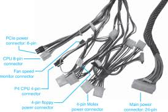

Power Supply Unit
The PSU is your computer's power bank—it converts electricity from your wall into the right voltages your PC parts need to run. Without it, nothing turns on! A good PSU delivers stable power (no surges or shortages) and has enough watts to feed hungry parts like your GPU and CPU.
First, perform the 'paperclip test' (jumping pins 16 & 17 on the 24-pin connector) to verify basic PSU functionality, while checking that all power cables are fully seated at both ends. Use a multimeter to confirm voltages (+3.3V, +5V, +12V rails) stay within ±5% tolerance under load if possible.